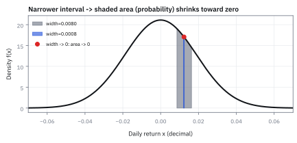

1.8 Continuous Random Variables and the Probability Density Function (PDF)
เมื่อตัวแปรมีค่าได้ทุกจุดในช่วง โอกาสไม่ได้อยู่ที่จุด แต่อยู่ในพื้นที่ใต้เส้น density
รายงานความเสี่ยงแสดงกราฟ density ของผลตอบแทนรายวันของกองทุนดัชนีหุ้นเทคโนโลยี (แบบจำลอง Normal ค่าเฉลี่ยศูนย์ ความผันผวน 30% ต่อปี) ยอดกราฟสูงถึง 21.11 นักวิเคราะห์ฝึกหัดถามว่า “แปลว่าโอกาสที่ผลตอบแทนเป็น 0% พอดีคือ 2,111% หรือ” ผู้สร้างแบบจำลองตอบว่าโอกาสของ 0% พอดีคือศูนย์ แล้วโอกาสที่ผลตอบแทนพรุ่งนี้อยู่ระหว่าง −0.1% ถึง +0.1% เป็นเท่าไร
ลองตอบก่อนเปิดเฉลย
ความสูง 21.11 ไม่ใช่โอกาส แต่เป็นโอกาส “ต่อหนึ่งหน่วยผลตอบแทน” ต้องคูณกับความกว้างของช่วงก่อน ช่วง −0.1% ถึง +0.1% กว้าง 0.002 จึงได้ประมาณ $21.11\times0.002\approx4.2\%$ (ค่าตรงจากพื้นที่คือ 4.22%) ส่วนจุด 0% พอดีมีความกว้างศูนย์ พื้นที่จึงเป็นศูนย์ ทั้งสองข้อความถูกพร้อมกัน
ภาพรวมก่อนลงสูตร
ใน PMF ของตัวแปรไม่ต่อเนื่อง โอกาสวางอยู่บนจุดเป็นแท่ง เช่นขาดทุน 1R หรือกำไร 2R แต่เวลารอให้คำสั่งถูกจับคู่อาจเป็น 3 นาที 3.1 นาที หรือ 3.1234 นาที ผลตอบแทนก็เช่นกัน มีจุดได้ไม่จำกัด ถ้าทุกจุดได้โอกาสบวก ผลรวมจะเกินหนึ่ง แต่ละจุดจึงต้องได้โอกาสศูนย์
ทางออกคือมองโอกาสเหมือนทรายที่โรยไว้ตามแกน แต่ละจุดไม่มีทรายเป็นก้อน แต่ทุกช่วงมีทรายอยู่จำนวนหนึ่ง ความหนาของทรายต่อหนึ่งหน่วยความยาวคือ density หรือ PDF และปริมาณทรายในช่วงคือพื้นที่ใต้เส้น density นั่นคือโอกาสของช่วงนั้น
หน้านี้สร้างแนวคิดจาก histogram ของเวลารอ ไปสู่ PDF รูปสามเหลี่ยมที่คิดพื้นที่ได้ด้วยมือ ต่อด้วย CDF ที่เป็นพื้นที่สะสม ค่าเฉลี่ยจาก integral แล้วจึงกลับมาอ่านกราฟผลตอบแทนที่สูง 21.11 และปิดด้วยกรณีที่บางค่ามีโอกาสเป็นก้อน
รูป — โอกาสของช่วงคือพื้นที่ใต้ density
ศัพท์ที่ใช้ในหน้านี้
- PDF หรือ density
- function $f$ ที่ไม่ติดลบและมีพื้นที่ใต้เส้นรวมเป็นหนึ่ง โอกาสของช่วงคือพื้นที่ใต้ $f$ บนช่วงนั้น ส่วนความสูงคือโอกาสต่อหนึ่งหน่วยของแกนนอน
- CDF
- $F(x)=P(X\le x)$ โอกาสสะสมจากซ้ายสุดถึง $x$ สำหรับตัวแปรที่มี PDF คือพื้นที่ใต้ density จากซ้ายสุดถึง $x$ ใช้ตอบคำถามช่วงด้วยการลบสองค่า
- density histogram และ bin width
- histogram ที่ตั้งความสูงเป็นสัดส่วนข้อมูลหารด้วยความกว้างของช่อง (bin width) ทำให้พื้นที่ของแท่งคือสัดส่วน และเทียบกับเส้น PDF ได้ตรง ๆ
- support
- ช่วงค่าที่ตัวแปรเป็นไปได้ เช่นเวลารอ 0 ถึง 10 นาทีในแบบจำลองนี้ นอก support density เป็นศูนย์
- point mass และ distribution ผสม
- point mass คือโอกาสเป็นก้อนที่จุดเดียว เช่นคำสั่งที่จับคู่ทันที distribution ที่มีทั้งก้อนที่จุดและส่วนที่กระจายต่อเนื่องเรียกว่า distribution ผสม (mixed distribution)
- basis point (bp)
- 0.01 จุดเปอร์เซ็นต์ หรือ 0.0001 ในหน่วยทศนิยม ใช้บอกความกว้างของช่วงผลตอบแทนแคบ ๆ
สัญลักษณ์
| สัญลักษณ์ | ความหมาย | หน่วย |
|---|---|---|
| $T,\ t$ | เวลารอ (ตัวแปรสุ่ม), ค่าเวลาที่ถาม | นาที |
| $f(t)$ | PDF ของเวลารอ | ต่อนาที |
| $F(t)$ | CDF ของเวลารอ | โอกาส (ไม่มีหน่วย) |
| $\varepsilon$ | ความกว้างเต็มของช่วงแคบ | หน่วยเดียวกับแกนนอน |
| $X,\ \sigma$ | ผลตอบแทนรายวัน, ความผันผวนรายวัน | ทศนิยม (0.01 = 1%) |
| $\Phi$ | CDF ของ Standard Normal | โอกาส |
ขั้นที่ 1 — histogram: หารด้วยความกว้าง เพื่อให้พื้นที่เป็นสัดส่วน
เริ่มจากข้อมูลจริงก่อนมีสูตร สมมติเราเก็บเวลารอให้ limit order ถูกจับคู่ 1,000 ครั้ง มี 130 ครั้งที่รอระหว่าง 3 ถึง 4 นาที และ 160 ครั้งที่รอระหว่าง 6 ถึง 10 นาที ถ้าจะวาดแท่งให้เทียบกันได้แม้ช่องกว้างไม่เท่ากัน ความสูงต้องเป็นสัดส่วนหารด้วยความกว้าง
$c$ คือจำนวนข้อมูลในช่อง $N$ คือจำนวนข้อมูลทั้งหมด $w$ คือความกว้างของช่อง ช่องที่กว้างย่อมเก็บข้อมูลได้มากเพียงเพราะมันกว้าง ถ้าใช้สัดส่วนดิบเป็นความสูง ช่อง 6–10 นาที (0.16) จะดูสูงกว่าช่อง 3–4 นาที (0.13) ทั้งที่การรอนานขนาดนั้นเกิดน้อยกว่าเมื่อคิดต่อนาที การหารด้วยความกว้างทำให้ความสูงมีหน่วย “ต่อนาที” ซึ่งคือ density และทำให้พื้นที่ของแท่งย้อนกลับมาเป็นสัดส่วนเดิม
รูป — density histogram ของเวลารอ เทียบกับการใช้สัดส่วนดิบ
ขั้นที่ 2 — PDF ของเวลารอ และโอกาสเป็นพื้นที่
ถ้าเก็บข้อมูลมากขึ้นเรื่อย ๆ และทำช่องให้แคบลง ยอดแท่งของ density histogram จะเรียงเป็นเส้นเรียบ เส้นนั้นคือ PDF ให้แบบจำลองเวลารอเป็นเส้นตรงลดจาก 0.2 ต่อนาทีที่เวลา 0 ไปจนถึงศูนย์ที่ 10 นาที และเป็นศูนย์นอกช่วงนี้ PDF ใดก็ตามต้องผ่านสองเงื่อนไข: ไม่ติดลบ และพื้นที่ทั้งหมดเท่ากับหนึ่ง
บรรทัดที่สามคือนิยามของ PDF: โอกาสของช่วงคือพื้นที่ใต้ $f$ บนช่วงนั้น เครื่องหมาย integral เป็นแค่ชื่อของ “พื้นที่ใต้เส้น” ในกรณีนี้พื้นที่เป็นสี่เหลี่ยมคางหมู จึงใช้สูตรเรขาคณิตได้เลย (ความสูงเฉลี่ยของสองข้างคูณความกว้าง) และได้ 0.13 ตรงกับข้อมูล 130 ใน 1,000 ครั้ง ที่ต้องระบุว่า $f=0$ นอกช่วง 0 ถึง 10 นาที เพราะถ้าลากเส้นตรงต่อไปจะได้ density ติดลบ ซึ่งไม่มีความหมาย
ขั้นที่ 3 — CDF คือพื้นที่สะสมจากซ้ายสุด
คำถามแบบ “รอไม่เกิน $t$ นาทีมีโอกาสเท่าไร” ถามบ่อยจนควรมีสูตรสำเร็จ นี่คือ CDF จาก ตัวแปรสุ่มและ CDF ความหมายเดิมทุกอย่าง แต่ตอนนี้คำนวณด้วยพื้นที่สะสมแทนการบวกแท่ง
$u$ เป็นตัวแปรที่เดินไปตามแกนขณะสะสมพื้นที่ ส่วน $t$ คือขอบขวาที่ถาม ถ้ายังไม่คล่อง integral ให้ดูเป็นเรขาคณิต: พื้นที่จาก 0 ถึง $t$ คือสี่เหลี่ยมผืนผ้าสูง 0.2 กว้าง $t$ ลบสามเหลี่ยมที่หายไปด้านบน ($\tfrac12\cdot t\cdot0.02t=0.01t^2$) คำตอบช่วง 3–4 นาทีออกมา 0.13 เท่ากับสี่เหลี่ยมคางหมูในขั้นที่แล้ว ก่อน 0 นาที $F=0$ และตั้งแต่ 10 นาทีขึ้นไป $F=1$
รูป — CDF ของเวลารอ: ความสูงของเส้นคือพื้นที่ที่สะสมมา
ขั้นที่ 4 — ย้อนกลับ: PDF คือความชันของ CDF และช่วงแคบใช้ความกว้าง × ความสูง
ถ้า CDF คือพื้นที่สะสม การหาความชันของมันก็ควรคืน density กลับมา ลองดูช่วงเล็ก ๆ กว้าง $h$ แล้วหารโอกาสในช่วงด้วยความกว้าง จะได้ “โอกาสต่อนาที” ใกล้จุดนั้น ผลเดียวกันให้ทางลัดที่ใช้บ่อยมาก: โอกาสของช่วงแคบประมาณได้ด้วยความกว้างคูณความสูง
ความสูงของ density จึงอ่านว่า “โอกาสต่อหนึ่งหน่วยความยาวรอบจุดนั้น” เหมือนความหนาแน่นของวัตถุคือมวลต่อปริมาตร บรรทัดที่ห้าตรวจด้วยตัวเลข: ช่วง 0.02 นาทีรอบ 3.5 นาทีมีโอกาส 0.0026 หารด้วย 0.02 ได้ 0.13 ซึ่งคือ $f(3.5)$ บรรทัดสุดท้ายใช้ทางลัด: ช่วง 10 วินาที (1/6 นาที) รอบ 3.5 นาทีมีโอกาสราว 2.17% สำหรับเส้นตรงและช่วงที่สมมาตรรอบจุด ทางลัดนี้ตรงพอดี สำหรับเส้นโค้งมันเป็นค่าประมาณที่แม่นขึ้นเมื่อช่วงแคบลง
ขั้นที่ 5 — จุดเดียวมีโอกาสศูนย์ แต่ค่าที่ถูกปัดแล้วไม่ใช่
ทางลัดในขั้นที่แล้วบอกทันทีว่าจุดเดียวมีโอกาสเท่าไร: ช่วงที่ครอบจุดนั้นมีโอกาสราว $\varepsilon f(x)$ และเราบีบ $\varepsilon$ ให้เล็กเท่าไรก็ได้ แต่เวลาบนหน้าจอถูกปัดเป็นทศนิยมสองตำแหน่ง คำถามเรื่องค่าที่แสดงจึงเป็นคำถามคนละแบบ
โอกาสของ 3.5000… นาทีพอดีจึงเป็นศูนย์ แต่ไม่ได้แปลว่าเป็นไปไม่ได้ ต้องมีค่าใดค่าหนึ่งเกิดขึ้นเสมอ ที่ดูขัดกันเพราะเรากำลังรวมศูนย์บนจุดจำนวนมากจนนับไม่ได้ ซึ่งกฎการบวกโอกาสไม่ครอบคลุม (กฎบวกใช้กับเหตุการณ์ที่เรียงนับเป็นรายการได้) ผลข้างเคียงที่ใช้ได้จริงคือขอบช่วงไม่มีผล: $P(3\lt T\le4)=P(3\le T\le4)$ ต่างจาก PMF ที่การรวมหรือไม่รวมขอบเปลี่ยนคำตอบ ส่วนค่าที่แสดง 3.50 คือช่วง 3.495 ถึง 3.505 กว้าง 0.01 นาที จึงมีโอกาส 0.13% ราคาหุ้นที่ขยับทีละ tick (เช่น 1 เซนต์) ก็เป็นแบบนี้ แบบจำลองต่อเนื่องเป็นการประมาณของข้อมูลที่จริง ๆ แล้วเป็นขั้น
ขั้นที่ 6 — ค่าเฉลี่ยและ SD: เปลี่ยนผลรวมเป็น integral
ใน expected value เราบวก ค่า × โอกาส ทุกค่า ตอนนี้โอกาสของชิ้นบาง ๆ กว้าง $dt$ คือ $f(t)\,dt$ ผลรวมจึงกลายเป็น integral โดยสูตรเดิมทุกตัวยังใช้ได้ รวมถึง variance ใน variance และ standard deviation
เวลารอเฉลี่ย 3 นาที 20 วินาที กระจายรอบค่าเฉลี่ยราว 2.36 นาที ลองเทียบกับ median ซึ่งคือเวลาที่ $F(t)=0.5$: แก้ $0.2t-0.01t^2=0.5$ ได้ $t^2-20t+50=0$ และ $t=10-\sqrt{50}\approx2.93$ นาที median ต่ำกว่า mean เพราะหางขวาที่ยาวถึง 10 นาทีดึงค่าเฉลี่ยขึ้น ส่วนค่ากลางแบ่งครึ่งไม่สนใจว่าค่าทางขวาไกลแค่ไหน
ขั้นที่ 7 — ผลตอบแทนรายวัน: ทำไมความสูง 21.11 จึงไม่ผิดกฎ
กลับมาที่กราฟในรายงาน แบบจำลองให้ผลตอบแทนรายวัน $X$ เป็น Normal ค่าเฉลี่ยศูนย์ ความผันผวน 30% ต่อปี ใช้ 252 วันซื้อขายต่อปี (จำนวนวันทำการโดยประมาณของตลาดหุ้นสหรัฐ) แปลงเป็นรายวันด้วยรากที่สอง เพราะ variance ของผลรวมผลตอบแทนรายวันที่อิสระกัน 252 วันเท่ากับ 252 เท่าของ variance รายวัน รูปร่างของ Normal density จะสร้างอย่างละเอียดใน Normal distribution และ QQ plot ที่นี่ใช้สูตรอ่านความสูงอย่างเดียว
หน่วยของ 21.11 คือ “ต่อหนึ่งหน่วยผลตอบแทนแบบทศนิยม” ผลตอบแทนส่วนใหญ่อยู่ในช่วงกว้างแค่ราว ±0.04 เส้นจึงต้องสูงพอให้พื้นที่รวมเป็นหนึ่ง ถ้าเปลี่ยนแกนเป็นเปอร์เซ็นต์ ($Y=100X$) แกนนอนยืดออก 100 เท่า ความสูงต้องหดลง 100 เท่าเป็น 0.2111 เพื่อรักษาพื้นที่ แต่โอกาสของทุกช่วงไม่เปลี่ยน กฎ “ไม่เกินหนึ่ง” จึงใช้กับพื้นที่ ไม่ใช่กับความสูง
รูป — density ของผลตอบแทนรายวัน สูงเกินหนึ่งแต่พื้นที่รวมเป็นหนึ่ง
ขั้นที่ 8 — คำถามความเสี่ยงคือคำถามเรื่องพื้นที่
ฝ่ายความเสี่ยงถามว่า “ขาดทุนเกิน 3% ในหนึ่งวันมีโอกาสเท่าไร และปีหนึ่งจะเจอกี่วัน” คำตอบคือพื้นที่หางซ้ายในรูปด้านบน ใช้ $\Phi$ ซึ่งเป็น CDF ของ Normal มาตรฐาน หลังแปลงขอบ −3% เป็นจำนวนเท่าของ $\sigma$
14.2 วันคือจำนวนเฉลี่ยต่อปีตามแบบจำลอง ไม่ใช่คำรับประกันว่าทุกปีต้องเจอเท่านี้ การคูณจำนวนวันกับโอกาสรายวันให้ค่าเฉลี่ยได้เลย (ค่าเฉลี่ยของผลรวมคือผลรวมของค่าเฉลี่ย) ส่วนจะเจอติดกันกี่วันต้องรู้ความสัมพันธ์ข้ามวันเพิ่ม และตลาดจริงมีหางหนากว่า Normal ซึ่งจะตรวจในหน้าถัดไป
| ช่วงรอบผลตอบแทน 1.2345% | พื้นที่จริงจาก CDF | ทางลัด $\varepsilon f(x_0)$ |
|---|---|---|
| กว้าง 80 bp (ข้างละ 40 bp) | 13.5850% | 13.6433% |
| กว้าง 8 bp | 1.36427% | 1.36433% |
| กว้าง 0.8 bp | 0.136433% | 0.136433% |
ตารางนี้ใช้ $f(x_0)=17.054$ ที่ $x_0=1.2345\%$ ช่วงกว้าง 80 bp ทางลัดเกินไป 0.058 จุดเปอร์เซ็นต์ เพราะเส้นโค้งเปลี่ยนความสูงภายในช่วง เมื่อช่วงแคบลงสิบเท่า ความคลาดเคลื่อนหดลงเร็วกว่าตัวโอกาสเอง และที่ 0.8 bp สองค่าตรงกันทุกหลักที่แสดง ทุกแถวหดลงสิบเท่าตามความกว้าง ซึ่งคือสิ่งที่ “จุดเดียวมีโอกาสศูนย์” หมายถึง
รูป — บีบช่วงรอบ 1.2345% ให้แคบลง พื้นที่ยุบตาม

ขั้นที่ 9 — เมื่อบางค่ามีโอกาสเป็นก้อน: distribution ผสม
ในตลาดจริง คำสั่งบางใบถูกจับคู่ทันทีเพราะราคาข้ามฝั่ง สมมติ 20% ของคำสั่งจับคู่ทันที ($T=0$ พอดี) อีก 80% ต้องรอตาม density รูปสามเหลี่ยมเดิม ตอนนี้จุด $T=0$ มีโอกาสเป็นก้อน 0.2 ซึ่ง PDF อย่างเดียวอธิบายไม่ได้ ต้องนับก้อนนี้แยก
0.13 เป็นโอกาสภายในกลุ่มที่ต้องรอ จึงต้องคูณ 0.80 ก่อนเป็นโอกาสของคำสั่งทั้งหมด: จาก 1,000 ใบ มี 800 ใบที่รอ และ 104 ใบรอ 3–4 นาที $G$ คือ CDF ของคำสั่งทั้งหมด มันกระโดดขึ้น 0.2 ที่เวลาศูนย์ (ขนาดของการกระโดดคือ point mass) แล้วค่อย ๆ เพิ่มตามพื้นที่ใต้ $0.8f(t)$ ซึ่งรวมได้ 0.8 คำตอบผิดที่พบบ่อยคือ $0.20+0.64=0.84$ ซึ่งนับกลุ่มที่รอเสมือนเป็นทุกใบ
รูป — CDF ที่กระโดดที่เวลาศูนย์
ความผิดพลาดที่ให้คำตอบผิดแบบเงียบ ๆ
อ่านความสูงเป็นโอกาส: ยอด 21.11 ไม่ใช่ 2,111% และ density 0.13 ต่อนาทีก็ไม่ใช่ “โอกาสรอ 3.5 นาที 13%” ต้องคูณความกว้างเสมอ
เทียบ density ข้ามหน่วย: density ของเวลารอต่อนาทีที่ 0.13 คือ 0.13/60 ≈ 0.00217 ต่อวินาที ตัวเลขเปลี่ยน 60 เท่าทั้งที่โอกาสทุกช่วงเท่าเดิม ก่อนเทียบความสูงสองกราฟให้ตรวจหน่วยแกนนอนก่อน
ใช้ทางลัดกับช่วงกว้าง: โอกาสผลตอบแทนอยู่ในช่วง ±2% จากพื้นที่จริงคือ 71.0% แต่ถ้าใช้ความสูงกลาง × ความกว้าง จะได้ $21.11\times0.04\approx84.4\%$ คลาดไป 13 จุดเปอร์เซ็นต์ เพราะ density ลดลงมากภายในช่วงนั้น
ใช้สัดส่วนดิบเป็นความสูงเมื่อช่องกว้างไม่เท่ากัน: ช่อง 6–10 นาทีจะดูสูงกว่าช่อง 3–4 นาที (0.16 กับ 0.13) ทั้งที่ density จริงคือ 0.04 กับ 0.13
ลืมก้อนที่จุด: ใน distribution ผสม คำตอบ “ภายใน 4 นาที” คือ 0.712 ไม่ใช่ 0.64 (ลืมก้อน) และไม่ใช่ 0.84 (ลืมคูณ 0.8)
ใช้ทำอะไรบนโต๊ะจริง
ตัวเลขความเสี่ยงเกือบทุกตัวคือพื้นที่ใต้ density: โอกาสขาดทุนเกินเกณฑ์คือพื้นที่หาง และ VaR คือจุดบนแกนที่ทำให้พื้นที่หางเท่ากับ 1% หรือ 5% ส่วนการตั้งราคา option คือการหาค่าเฉลี่ยของ payoff ด้วย integral $\int g(x)f(x)\,dx$ แบบเดียวกับค่าเฉลี่ยเวลารอในขั้นที่ 6 เพียงแต่ต้องใช้ density ภายใต้มาตรวัดที่ใช้ตั้งราคาและคิดลดเงินด้วย ซึ่งจะเห็นใน สูตร Black–Scholes
โจทย์ตรวจความเข้าใจ
1. ในแบบจำลองเวลารอรูปสามเหลี่ยม โอกาสที่เวลารอจะอยู่ระหว่าง 8 ถึง 10 นาทีเท่าไร ตอบทั้งด้วยเรขาคณิตและด้วย CDF
เฉลย
พื้นที่ใต้เส้นจาก 8 ถึง 10 นาทีเป็นสามเหลี่ยมฐาน 2 นาที สูง $f(8)=0.2-0.16=0.04$ ต่อนาที ได้ $\tfrac12\times2\times0.04=0.04$ ตรวจด้วย CDF: $F(10)-F(8)=1-(1.6-0.64)=1-0.96=0.04$ ตรงกัน คำสั่ง 4% รอนานกว่า 8 นาที
2. ใช้แบบจำลองผลตอบแทนรายวันเดิม ($\sigma\approx0.01890$) หาโอกาสที่ผลตอบแทนอยู่ระหว่าง −2% ถึง +2% และอธิบายว่าทำไมไม่ใช้ $f(0)\times0.04$
เฉลย
แปลงขอบเป็นจำนวนเท่าของ $\sigma$: $0.02/0.01890\approx1.058$ ได้ $\Phi(1.058)-\Phi(-1.058)\approx0.8551-0.1449=0.7101$ หรือ 71.0% ถ้าใช้ $21.11\times0.04=0.844$ จะเกินจริง เพราะที่ขอบ ±2% density ลดเหลือ $21.11\,e^{-1.058^2/2}\approx12.1$ ไม่ใช่ 21.11 ตลอดช่วง ทางลัดความกว้าง × ความสูงใช้ได้กับช่วงแคบเท่านั้น
3. ในแบบจำลองที่ 20% ของคำสั่งจับคู่ทันที โอกาสที่คำสั่งต้องรอนานกว่า 3 นาทีเท่าไร
เฉลย
คำสั่งที่จับคู่ทันทีไม่รอเกิน 3 นาทีแน่นอน ส่วนกลุ่มที่รอมีโอกาสเกิน 3 นาทีเท่ากับ $1-F(3)=1-0.51=0.49$ จึงได้ $0.80\times0.49=0.392$ หรือ 39.2% ตรวจด้วย CDF รวม: $1-G(3)=1-(0.20+0.80\times0.51)=1-0.608=0.392$ ตรงกัน
คำนวณซ้ำด้วย JavaScript
เปิดดูโค้ด
// waiting-time model: f(t) = 0.2 - 0.02 t on [0, 10]
const F = t => t < 0 ? 0 : t > 10 ? 1 : 0.2 * t - 0.01 * t * t;
console.log(F(3), F(4), F(4) - F(3)); // 0.51 0.64 0.13
console.log((F(3.51) - F(3.49)) / 0.02); // 0.13 = f(3.5)
console.log(F(3.505) - F(3.495)); // 0.0013 (display 3.50)
const ET = 10 - 20 / 3, ET2 = 200 / 3 - 50;
console.log(ET, Math.sqrt(ET2 - ET * ET), 10 - Math.sqrt(50)); // 3.333 2.357 2.929
// Normal daily returns, 30% a year, 252 trading days
const sigma = 0.30 / Math.sqrt(252);
const phi = z => Math.exp(-z * z / 2) / Math.sqrt(2 * Math.PI);
function Phi(z) { // Simpson integration of phi from 0 to z
const n = 4000, h = Math.abs(z) / n;
let s = 0;
for (let i = 0; i <= n; i++) s += (i === 0 || i === n ? 1 : i % 2 ? 4 : 2) * phi(i * h);
return 0.5 + Math.sign(z) * s * h / 3;
}
console.log(sigma, phi(0) / sigma); // 0.01890 21.11
console.log(Phi(0.001 / sigma) - Phi(-0.001 / sigma)); // 0.0422
console.log(Phi(-0.03 / sigma), 252 * Phi(-0.03 / sigma)); // 0.0562 14.16
const x0 = 0.012345, fx = phi(x0 / sigma) / sigma;
for (const w of [0.008, 0.0008, 0.00008]) {
console.log(w, Phi((x0 + w / 2) / sigma) - Phi((x0 - w / 2) / sigma), w * fx);
}
console.log(Phi(0.02 / sigma) - Phi(-0.02 / sigma)); // 0.710
// mixed distribution: 20% filled at once
const G = t => t < 0 ? 0 : 0.2 + 0.8 * F(t);
console.log(G(4), 1 - G(3)); // 0.712 0.392สิ่งที่ควรตอบได้หลังอ่าน
- โอกาสของช่วงคือพื้นที่ใต้ PDF: $P(a\lt X\le b)=\int_a^b f(x)\,dx=F(b)-F(a)$ เช่นเวลารอ 3–4 นาทีมีโอกาส 0.13
- ความสูงของ density มีหน่วย “ต่อหน่วยแกนนอน” จึงสูงเกินหนึ่งได้ เช่น 21.11 สำหรับผลตอบแทนรายวัน และเปลี่ยนตามหน่วยที่ใช้
- CDF คือพื้นที่สะสม และ PDF คือความชันของ CDF ช่วงแคบกว้าง $\varepsilon$ มีโอกาสราว $\varepsilon f(x)$
- จุดเดียวมีโอกาสศูนย์ แต่ค่าที่ปัดแล้วคือช่วงที่มีโอกาสบวก เช่นเวลาที่แสดง 3.50 นาทีมีโอกาส 0.13%
- ค่าเฉลี่ยและ variance ใช้สูตรเดิมโดยเปลี่ยนผลรวมเป็น integral: เวลารอเฉลี่ย 3.33 นาที SD 2.36 นาที
- ถ้ามีค่าที่มีโอกาสเป็นก้อน CDF จะกระโดด และต้องนับก้อนนั้นแยกจากพื้นที่
หน้าถัดไป Normal distribution และ QQ plot จะสร้างเส้นระฆังที่ใช้ในขั้นที่ 7 อย่างละเอียด คำนวณหางและ VaR ด้วยมัน แล้วตรวจว่าข้อมูลผลตอบแทนจริงเข้ากับมันแค่ไหน